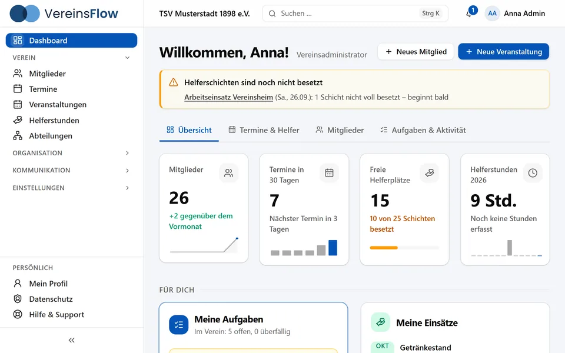
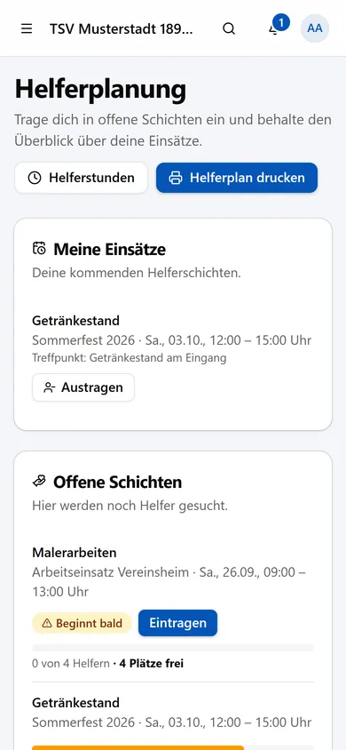
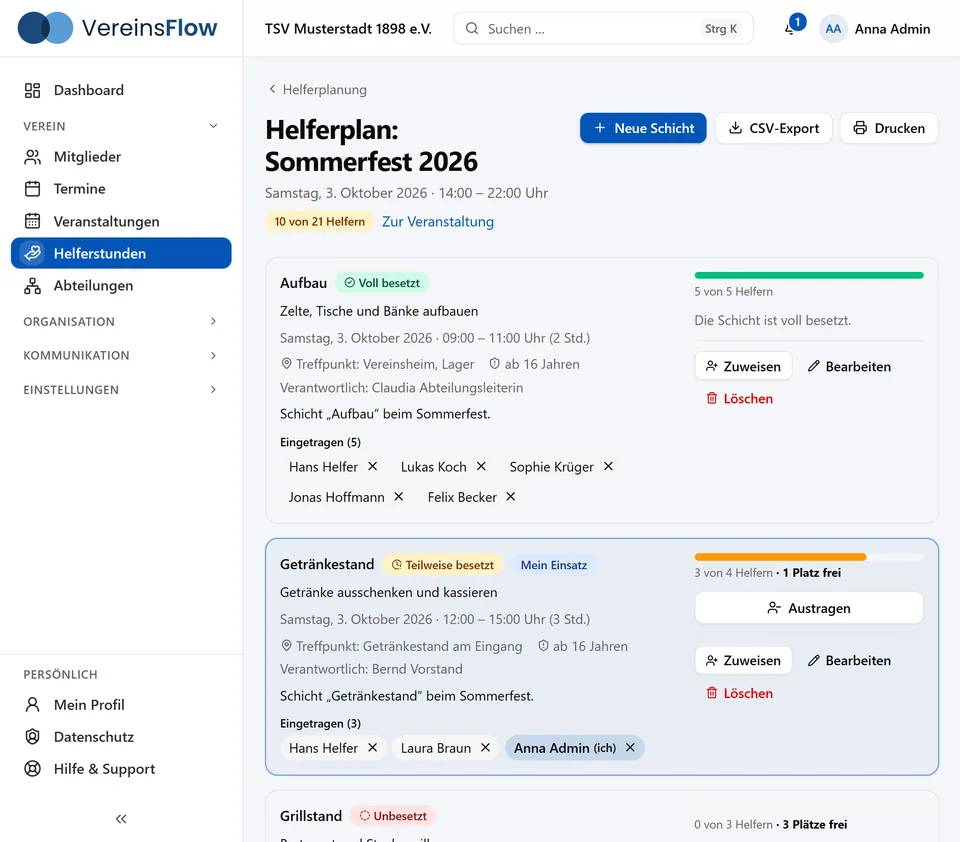
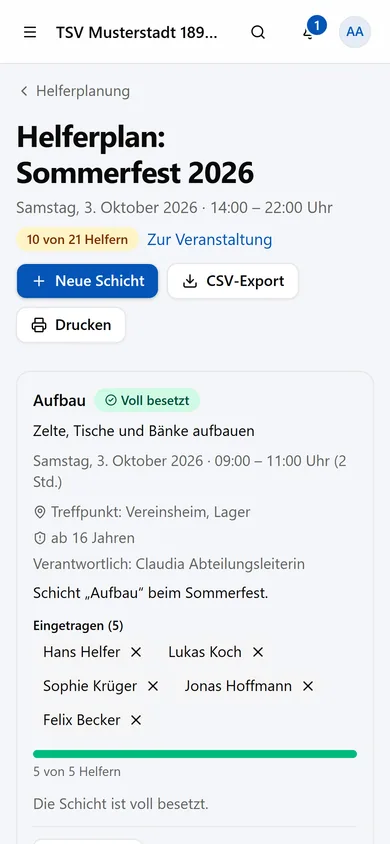
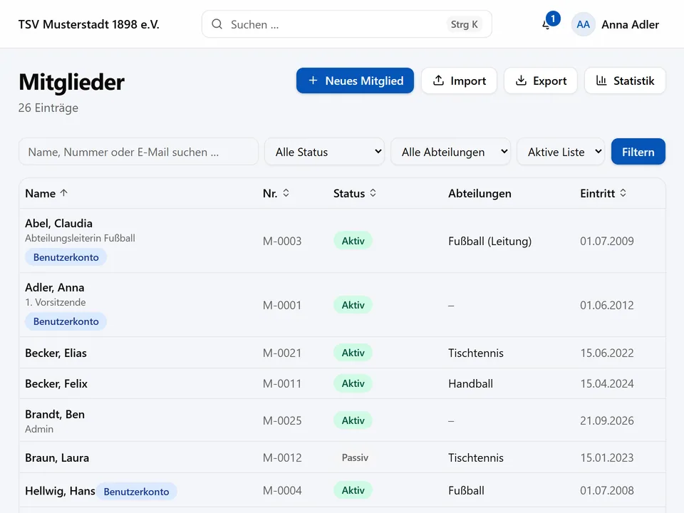
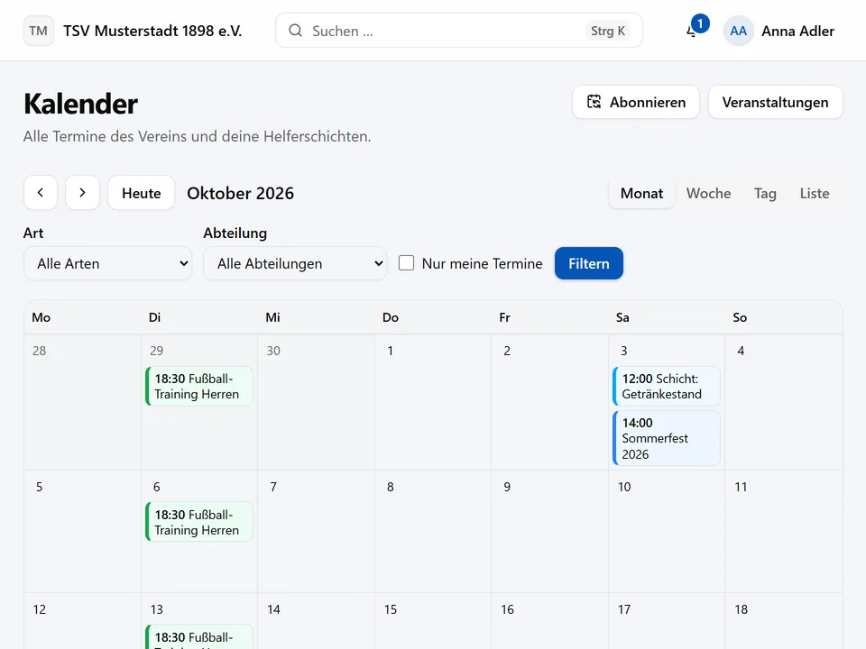
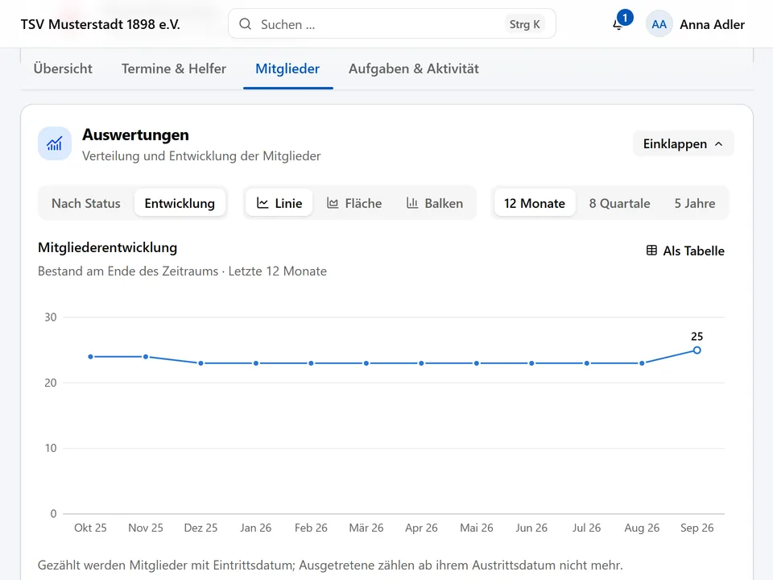
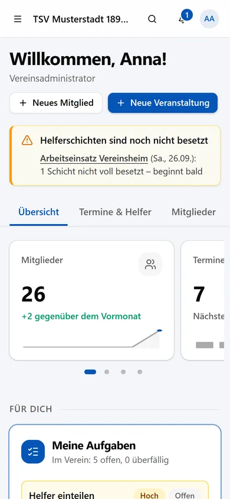
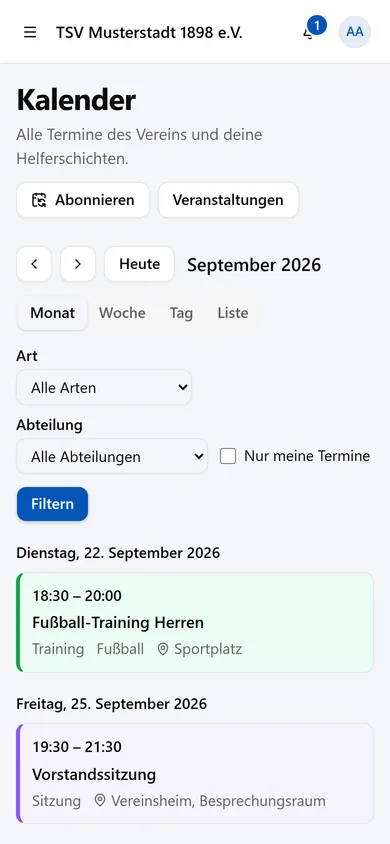

Helfer koordinieren
Bisher
Chatgruppen, Zettel am Schwarzen Brett und doppelt vergebene Plätze.
Mit VereinsFlow
Helfer tragen sich selbst in Schichten ein. Überbuchung und Doppelbelegung sind ausgeschlossen.
Vereinsverwaltung für den Alltag im Ehrenamt
VereinsFlow bündelt Mitglieder, Veranstaltungen, Helferschichten, Aufgaben und Nachrichten an einem Ort – übersichtlich, sicher und komplett auf Deutsch.


Aus Listen, Chats und Rundmails wird ein gemeinsamer Ablauf – für Vorstand, Abteilungen und Helfer.
Chatgruppen, Zettel am Schwarzen Brett und doppelt vergebene Plätze.
Helfer tragen sich selbst in Schichten ein. Überbuchung und Doppelbelegung sind ausgeschlossen.
Mehrere Excel-Listen mit unterschiedlichem Stand.
Eine Mitgliederverwaltung mit Import, Suche, Abteilungen, Einwilligungen und Änderungshistorie.
Rundmails an wechselnde Verteiler – und niemand weiß, wer sie gelesen hat.
Nachrichten an den ganzen Verein, eine Abteilung oder gezielt an Teilnehmer und Helfer – mit Lesestatistik.
Funktionen
Neun Bereiche, die zusammenarbeiten – statt neun einzelner Werkzeuge.
Stammdaten, Notizen, Einwilligungen und Änderungshistorie. CSV-Import mit Vorschau, Export, Statistik, Archiv und Papierkorb.
Abteilungen mit eigenen Leitungen und Gruppen. Rechte und Nachrichten lassen sich auf sie beschränken.
Anmeldung mit Teilnehmerlimit und Warteliste, Serientermine, Duplizieren und Absage mit automatischer Benachrichtigung.
Selbst eintragen, Ampel-Übersicht, Mindestalter, Stundenerfassung, Druckansicht und Erinnerungen.
Aufgaben mit Zuständigen, Fälligkeit, Priorität und Status – auch als Checkliste je Veranstaltung.
Monat, Woche, Tag oder Liste. Export je Termin und ein persönlicher Abo-Link für jede Kalender-App.
An Verein, Abteilung, Teilnehmer oder Helfer. Entwürfe, Ankündigungen, Rückruf, Lesestatistik und Benachrichtigungscenter.
Satzung, Protokolle und Formulare an einem Ort – mit Zugriffsstufen für alle Mitglieder, nur den Vorstand oder nur die Verwaltung.
Ein Dashboard je Rolle mit Kennzahlen und Diagrammen zu Mitgliedern, Terminen, Helferstunden und Aufgaben.
Das Herzstück
Kein Zettelchaos, keine Nachfragen, kein Loch beim Sommerfest: Helfer sehen offene Schichten und tragen sich mit einem Klick ein. Der Vorstand sieht auf einen Blick, wo noch jemand fehlt.


Im Detail
Vorhandene Listen lassen sich per CSV übernehmen, nach Abteilung, Status oder Namen filtern und mit Einwilligungen dokumentieren. Jede Änderung bleibt nachvollziehbar.

Veranstaltungen durchlaufen einen klaren Ablauf, Teilnehmer melden sich an, und der Kalender zeigt Termine und eigene Einsätze in einer Ansicht.

Das Dashboard passt sich der Rolle an: Helfer sehen ihre Einsätze, der Vorstand sieht Mitgliederentwicklung, Termine, Helferstunden und offene Aufgaben.

Rollen und Rechte
Fünf Standardrollen sind sofort einsatzbereit. Die Rechte gelten je nach Rolle für den ganzen Verein, die eigene Abteilung oder nur für die eigenen Daten.
Verwaltet den gesamten Verein: Benutzer, Rollen, Mitglieder, Veranstaltungen und Einstellungen.
MitgliederdatenGesamter VereinVerwaltet Mitglieder, erstellt Veranstaltungen, organisiert Helfer und versendet Nachrichten.
MitgliederdatenGesamter VereinVerwaltet Mitglieder, Veranstaltungen und Helferschichten der eigenen Abteilung.
MitgliederdatenEigene AbteilungSieht Veranstaltungen, trägt sich in Helferschichten ein und sieht die eigenen Aufgaben.
MitgliederdatenNur eigeneSieht das eigene Profil und die Veranstaltungen und kann sich für Helferschichten eintragen.
MitgliederdatenNur eigeneDokumente lassen sich zusätzlich in Zugriffsstufen ablegen: für alle Mitglieder, nur für den Vorstand oder nur für die Verwaltung.
Mobil
Keine Installation und kein App-Store-Konto: VereinsFlow passt sich Smartphone, Tablet und Rechner an. Helfer tragen sich unterwegs ein, der Vorstand hat den Überblick in der Hosentasche.


Sicherheit und Datenschutz
Vereine verwalten Namen, Adressen und Geburtstage – oft auch von Kindern und Jugendlichen. Sicherheit ist deshalb Grundlage von VereinsFlow, kein Zusatzmodul.
Konten entstehen nur durch die Einladung des Vereins. Niemand kann sich selbst Zugang zu Mitgliederdaten verschaffen.
Jeder Verein ist ein eigener Mandant. Drei Schutzschichten trennen die Daten, und automatische Tests mit zwei Vereinen prüfen das in jedem Fachbereich.
Ganzer Verein, eigene Abteilung oder nur eigene Daten – bei jeder Anfrage auf dem Server geprüft, nicht nur in der Oberfläche versteckt.
Passwörter werden mit Argon2id gesichert. Wiederholte Fehlversuche werden gebremst, inaktive Sitzungen laufen automatisch ab.
Ein unveränderliches Änderungsprotokoll zeigt, wer wann was geändert hat. Sensible Werte erscheinen darin nur als „geändert“.
Datenexport, Löschantrag mit 14 Tagen Bedenkzeit, Einwilligungen, Anonymisierung und Aufbewahrungsfristen je Verein.
Auch die Plattformverwaltung, die neue Vereine anlegt, sieht keine Mitgliederdaten. Die Anwendung setzt nur ein technisch notwendiges Cookie für die Anmeldung.
Ablauf
Neue Vereine werden von uns eingerichtet. Danach übernimmt der Vereinsadministrator: Einstellungen, Abteilungen und Benutzer.
Vorhandene Listen per CSV importieren – mit Vorschau, bevor etwas gespeichert wird. Eine Vorlage liegt bereit.
Vorstand, Abteilungsleiter, Helfer und Mitglieder erhalten einen persönlichen Einladungslink per E-Mail und legen ihr Passwort selbst fest.
Ausblick
VereinsFlow wächst mit den Anforderungen der Vereine. Diese Bereiche stehen auf der Liste – Reihenfolge und Zeitpunkt stehen noch nicht fest.
Mitgliedsbeiträge, Kassenbuch und Spendenbescheinigungen.
Zusätzlicher Schutz für Administrator-Konten.
Veranstaltungen auf der Website des Vereins verlinken.
Benachrichtigungen direkt aufs Smartphone.
Fragen und Antworten
Für Vereine jeder Größe – besonders für solche mit mehreren Abteilungen, regelmäßigen Veranstaltungen und vielen ehrenamtlichen Helfern, etwa Sport-, Kultur- und Fördervereine.
Nein. VereinsFlow läuft im Browser – am Rechner, Tablet und Smartphone. Eine App für Android oder iOS gibt es derzeit nicht; sie ist geplant.
Ja. Der CSV-Import zeigt vorab eine Vorschau, damit Fehler auffallen, bevor etwas gespeichert wird. Eine Vorlage steht bereit. Umgekehrt lassen sich Mitglieder jederzeit als CSV exportieren.
Beim Eintragen sperrt die Datenbank den Platz: Wählen mehrere Personen gleichzeitig den letzten freien Platz, bekommt ihn genau eine. Zusätzlich verhindert VereinsFlow, dass jemand zur selben Zeit in zwei Schichten steht.
Das bestimmen Rollen und Rechte: Vereinsadministrator, Vorstand, Abteilungsleiter, Helfer und Mitglied. Abteilungsleiter sehen zum Beispiel nur die Mitglieder ihrer Abteilung, Helfer und Mitglieder nur die eigenen Daten. Dokumente lassen sich zusätzlich für alle Mitglieder, nur den Vorstand oder nur die Verwaltung freigeben.
VereinsFlow bringt die Werkzeuge mit, die ein Verein für die DSGVO braucht: Datenexport, Löschantrag mit Bedenkzeit, Einwilligungen, Anonymisierung und Aufbewahrungsfristen. Die Anwendung setzt nur ein technisch notwendiges Cookie für die Anmeldung und verwendet kein Tracking.
Verantwortlich für die Daten bleibt der Verein – VereinsFlow ist das Werkzeug dafür.
Noch nicht. Beitragsverwaltung, Kassenbuch und Spendenbescheinigungen sind in Planung.
Am besten in einer persönlichen Demo. Eine kurze E-Mail genügt – wir melden uns und zeigen VereinsFlow anhand der Fragen des Vereins.
Wir zeigen VereinsFlow in einer persönlichen Demo – unverbindlich und passend zu den Fragen Ihres Vereins.
Oder direkt schreiben an [[E-MAIL]]
Neue Vereine richten wir selbst ein. Zugänge entstehen danach ausschließlich über Einladungen des Vereins.